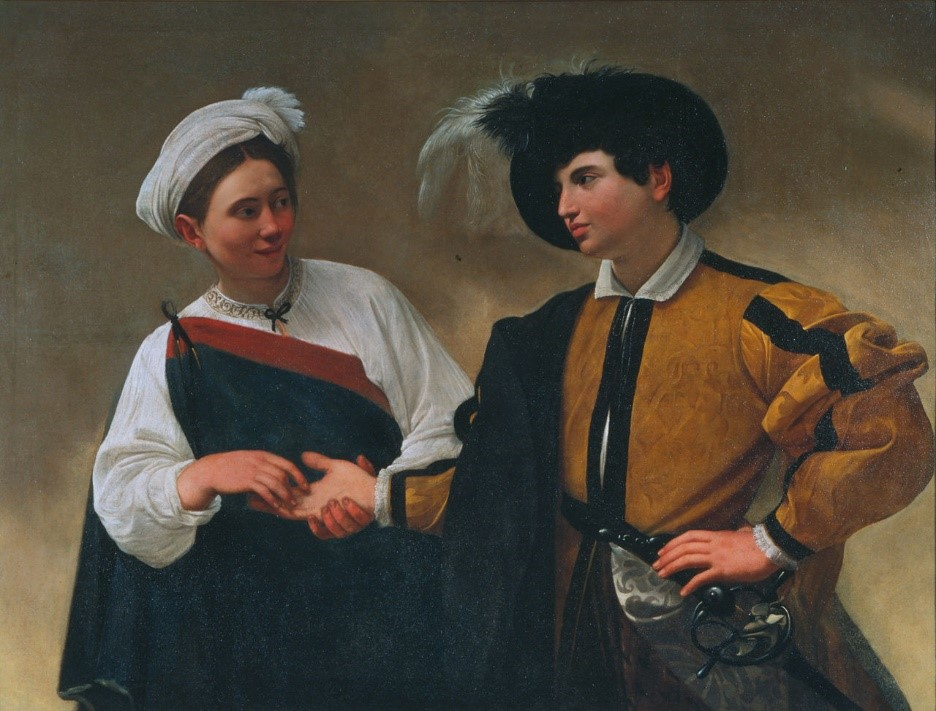

Michelangelo Merisi da Caravaggio, "The fortune teller" 1594
מגישים: איתאל קלנגן, אלכסנדר סוקולוב, סתיו בר שי
עובדתי
ביצירה שתי דמויות העומדות זו לצד זו – בחור הלבוש בבגדים מכובדים וצמודה אליו אוחזת בידו, אישה הלבושה בבגדי צוענייה.
בציור קיימת מעיין המשכיות בצבע בין הגלימה אשר עוטה הבחור לבין מלבושיה של הצוענייה, מעיין "קשר" ויזואלי הנוצר ביניהם הודות לגוון הזהה של המלבושים. קאראווג'ו בוחר להציב את הדמויות אחת לצד השנייה כשדמות האישה רוכנת לעבר הבחור ונותנת תחושה כי היא כמעט לפניו. תווי פניו של הבחור צעירים וילדותיים מעט ואילו תווי פניה של הצוענייה מבוגרים יותר. הבחור ממוקד כל כולו בהקשבה לדמות הצוענייה האוחזת בידו, מקריאה לו את עתידו. באותו זמן ממש, הוא אינו מבחין כלל כי בעשותה זאת, היא מנסה להסיר את הטבעת אשר על אצבעו. מקריאה על האמן גילינו כי הרבה לצייר ציורים של קדושים וסצינות תנ"כיות ולהציג את הדמויות כאנשים רגילים. יצירותיו מאופיינות בריאליזם מפורט (ואכן, דמות הצוענייה מבוססת על אחת מן הנשים הצועניות אשר נתקל בהן ברחוב), בחירת מודלים לא שגרתיים ומשחקי אור וצל.